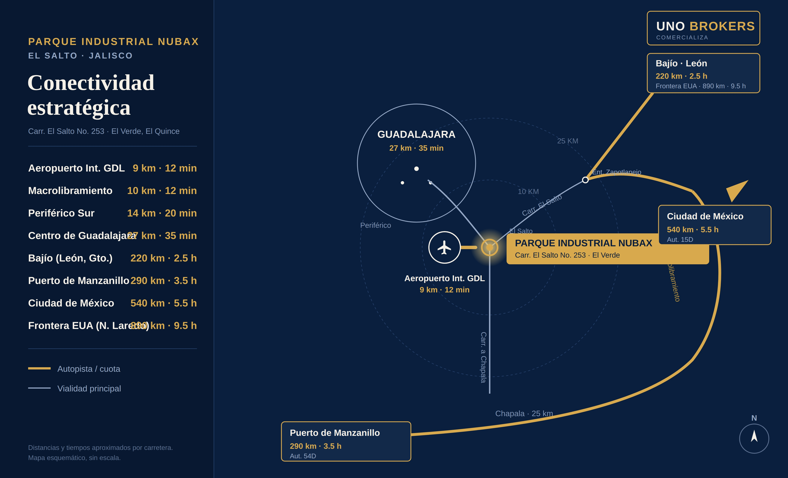

Parque Nubax ofrece lotes industriales cerca del Aeropuerto Internacional de Guadalajara, dentro del corredor industrial de El Salto, Jalisco — una de las zonas de mayor crecimiento industrial del occidente de México, con acceso directo a las principales vías logísticas de la región.
El corredor industrial de El Salto se ha consolidado como uno de los polos manufactureros y logísticos más importantes del occidente del país. La zona concentra empresas de los sectores automotriz, tecnológico, logístico y manufacturero, y ha registrado un crecimiento sostenido en superficie industrial rentable durante los últimos años.
Parque Nubax aprovecha esta ubicación estratégica: cercanía al Aeropuerto Internacional de Guadalajara, acceso a la Carretera Guadalajara-Chapala y conexión con el Macrolibramiento, lo que facilita tanto la operación logística como el traslado diario de personal.

Parque Nubax se encuentra a menos de 15 km del Aeropuerto Internacional de Guadalajara, facilitando operaciones de importación y exportación.
Conexión directa con una de las vialidades más importantes del área metropolitana de Guadalajara.
Acceso a la vialidad que conecta con los principales corredores logísticos y comerciales del país.
Distancia aproximada al extremo más alejado del AMG, con buena disponibilidad de mano de obra en la región.
Te compartimos ubicación exacta, medidas y precio de cada lote disponible en Parque Nubax.
Escríbenos por WhatsApp